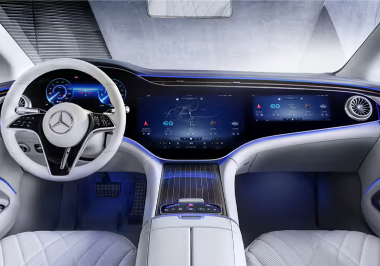

Brand
Mercedes-Benz's triangle star was created in 1925, with the creation of the Mercedes-Benz brand.Check out the charming
vehicle
highlights that continue to form a legendary brand to this day.
A fascinating success story begins with the invention of Carl Benz and Gottlieb Daimler in 1886. The world's first
automobile led to another invention that significantly influenced the history of car development
-
- 1886 | Benitz patent car
-
Benitz patent car is the world's first car.Carl Benz (Car Benz) designed this vehicle in 1885 and applied patents on January 29, 1868.
-
- 1900 | Merkel 35HP
-
In 1900, the main road structure of Emellinek, the main road structure of Emeline and the existing vehicle development.
-
- 1959 | Safety body: Mercedes-Benz 'tail pin'
-
In 1959, Mercedes-Benz introduced the safety body, a major innovation in the industry.
-
- 1978 | ABS brake system: Mercedes-Benz S-Class
-
The dream of engineers were realized in 1978.Mercedes-Benz introduced a lock system through S-Class.
-

- 1981 | Basic Specification Cars: Mercedes-Benz S-Class
-
The world's first car with airbags and seat belt tensioners was the Mercedes-Benz S-Class in 1981.
-
- 2002 | Protection System: Mercedes-Benz S-Class
-
If the sensor detects collision impedance, this technology allows the vehicle to prepare for shock.
-

- 2013 | Mercedes-Benz Intelligent Drive
-
Since 2013, various Driving Assistance (DA) systems have been integrated under the name Mercedes-Benz Intelligent Drive.
-
- 2021 | Mercedes-Benz First Electric Luxury sedan: EQS
-
EQS is the first model designed as MERS, and the first model designed as a modular architecture for luxury electric vehicle.